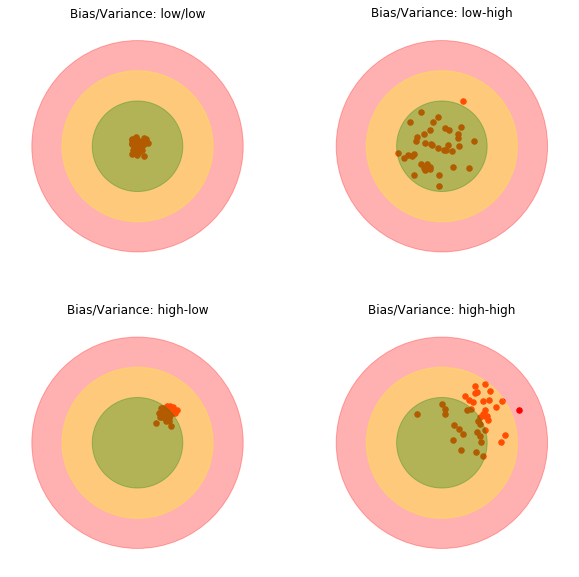
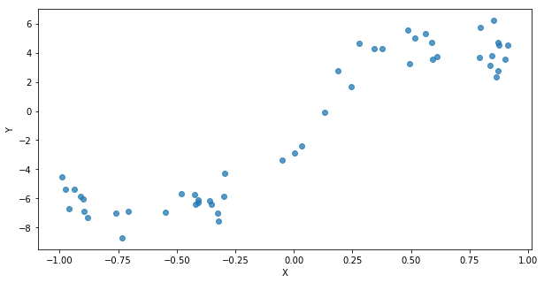
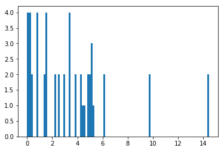
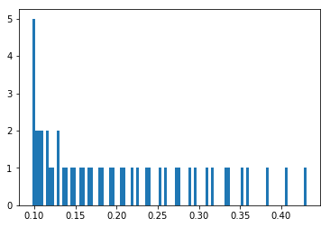
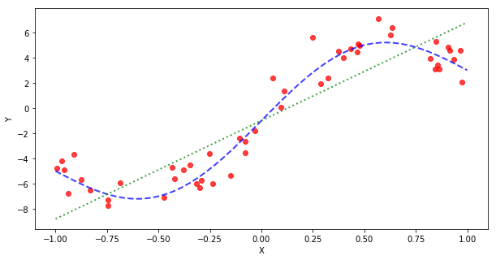
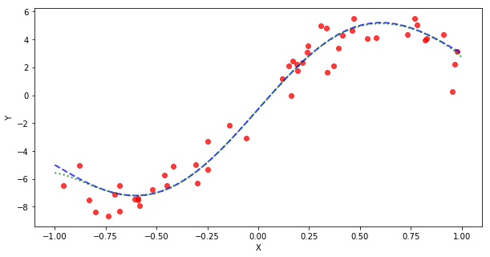

1. Introduction
In the two previous post-series about (linear and (logistic regression, we have used the whole dataset to train the model and to assess the final performance.
We now have the chance to go a bit deeper to get some understanding about model selection, why it is so crucial in the machine-learning field to prevent that expected-to-work-amazingly models or applications could miserably and/or dangerously fail.
A failure in a machine-learning application is not always the end of the world, especially if we want to classify whether a cat is in an uploaded picture or not. But it can be very critical in some other scenarios, such as cancer detection, text generation (do you recall the chat-bot developed by Microsoft, Tay?) or object recognition for autonomous driving cars, just to name a few.
Basically, we do not want our models to learn our data by heart and then to struggle to handle new unseen data samples. We want them to be great at generalizing.
This post series reviews different techniques that can be useful to properly evaluate and select a machine-learning model.
We will analyse each and every aspect with some theory first and practical examples with Python, Numpy and Scikit-learn in order to grasp and visualize those concepts in a more straightforward way.
Here follow the main post-series steps:
- Define the bias and variance concepts and apply it to both a linear and a non-linear model (Part 1).
- Visualize the bias-variance dilemma, understand how the model capacity relates to its performance and why it is common practice to split the dataset into training and testing, create some learning curves that should clarify whether gathering additional data might be worthy (Part 2).
- Go through the hyperparameter optimization for model selection, via cross-validation, and the regularization technique, also known as meta-learning (Part 3).
- Implement the Ridge regression in Python from scratch, apply it to a low-degree and high-degree model and optimize its weight with validation curves. (Part 4).
- Apply the model selection theory and practise to a linear binary classification problem, with two models with different complexity (Part 5).
- Inspect the model accuracy variability, the application of learning and validation curves with Scikit-learn, selection of the best model capacity with cross-validation with different regularization loss definitions (Part 6).
- Apply the same workflow to a non-linear binary classification problem (Part 7).
- Apply the full model selection procedure to this case (Part 8).
2. Importing the required libraries
import numpy as np
import matplotlib.pyplot as plt
%matplotlib inline
from mpl_toolkits import mplot3d
from sklearn.preprocessing import PolynomialFeatures, StandardScaler
from sklearn.linear_model import LinearRegression, LogisticRegression
from sklearn import metrics
from sklearn.model_selection import train_test_split, learning_curve, validation_curve, cross_val_score
from sklearn.pipeline import make_pipeline
from sklearn.datasets import make_circles
3. Bias and variance
Let’s assume that there is a function $f(x)$, the ground-truth, that generates the data $y$, with same noise $\varepsilon$. We want to learn a model, $\hat{f}(x)$, that gets as close as possible to the data $y = f(x) + \varepsilon$.
3.1 Bias
The bias of an estimator is the difference between the expected prediction of the estimator over the data (samples from a random variable) and the truth underlying value that define the data generating distribution. It describes the systematic error. It is higher when the model introduces more assumptions about the target function and oversimplify the underlying model. The higher the bias is, the higher the error on training and test sets.
3.2 Variance
The variance of an estimator indicates how much the model prediction can vary over different training datasets. Our goal is to get a model whose performance does not change too much from one training set to another one. That means that models with high variance are strongly affected by the specific properties of the actual training set used to train the model. One of the main consequences is that it would poorly generalize to new unseen samples.
3.3 Error
The error of the model $\hat{f}(x)$ is defined as:
$$ err(x) = E[(y-\hat{f}(x))^2] $$
This step is a bit tricky to get since the expected value $E[h]$ of a variable $h$ requires that several samples of that random variable are available, while the model error associated to input $x$ is calculated on the single trained model. However, the training/testing procedure could be repeated several times. At first, new samples are randomly drawn from the data-generating distribution to create the training dataset. The model is trained over the new training set and stored in a list. The error is then estimated over the entire list of trained models.
The error can be decomposed into bias, variance and noise:
$$ err(x) = \big(E[\hat{f}(x)]-f(x)\big)^2 + E\big[\big(\hat{f}(x)-E[\hat{f}(x)]\big)^2\big] + \varepsilon $$
$$ err(x) = bias^2 + variance + noise $$
Please read this section for further details.
3.4 Bull-eye diagram of low/high-capacity model
We can create a graphical visualization of bias and variance using a bulls-eye diagram. The central point of the target is the optimal achievable model. The model performance gets worse and worse when corresponding points move away from the bulls-eye.
Since bias and variance values come from the expectation over a set of trials, where the training set is brand-new generated at each trial, we need to repeat the whole model building process, which corresponds to a specific point on the target. It may happen that we get a good distribution of training data and the model overperforms (point close to the bulls-eye), while sometimes training data are such that the trained model leads to different outcomes and behaviour. The scatter plot shows how the model performs over the set of trials.
We illustrate four scenarios in a 4-chart figure:
- low bias/low variance in the top-left most chart
- low bias/high variance in the top-right most chart
- high bias/low variance in the bottom-left most chart
- high bias/high variance in the bottom-right most chart
We control the data generation process by feeding different mean and variance values to a multivariate normal distribution multivariate_normal from the Numpy random module.
# bias/variance: low-low, low-high, high-low, high-high
a, b, c = 3, 5, 7
e = c*1.2
dataMeans = [[0,0], [0,0], [2,2], [2,2]]
dataVars = [0.1, 1.5, 0.1, 1.5]
titles = ['low/low', 'low-high', 'high-low', 'high-high']
def getData(mean, var):
data = np.random.multivariate_normal(mean, var*np.eye(2), (20,2))
return data[:,0], data[:,1]
fig, axs = plt.subplots(2, 2, figsize=(10, 10))
for kk, ax in enumerate(axs.reshape(-1)):
xx, yy = getData(dataMeans[kk], dataVars[kk])
circle1 = plt.Circle((0, 0), a, color='green', alpha=0.3)
circle2 = plt.Circle((0, 0), b, color='yellow', alpha=0.3)
circle3 = plt.Circle((0, 0), c, color='red', alpha=0.3)
ax.add_artist(circle3)
ax.add_artist(circle2)
ax.add_artist(circle1)
ax.scatter(xx, yy, c='r', s=30)
ax.set_title('Bias/Variance: '+titles[kk])
ax.get_xaxis().set_ticks([])
ax.get_yaxis().set_ticks([])
ax.axis('off')
ax.axis('equal')
ax.axis([-e, e, -e, e])
plt.show()

If you are interested to dive in the Matplotlib graphics capabilities, please consider visiting the upcoming series about code-art in Python.
Right now, we can simply summarize that we draw circles with plt.Circle, we attach them to the current axis with add_artist, we add a scatter plot for the data distribution, we get rid of axis ticks to clear it up a bit and we set equal axis.
4. Dataset generation
We generate some synthetic data using the func function, which combines a line with a sine wave, as follows:
$$ y = m\cdot x + a\cdot\sin (\pi\cdot x) + q $$
We need two other functions now:
genDatagenerates noisy data but adding some noise drawn from a random normal distribution.groundTruthgenerates the ground-truth data that corresponding to the cleaned function defined above.
The figure shows 50 points from the noisy data.
def func(xx):
mm, qq, aa = 4, -1, 4
return mm*xx + aa*np.sin(np.pi*xx) + qq
def genData(Npnts=50):
xx = np.sort(2*np.random.rand(Npnts)-1)
yy = func(xx) + 1*np.random.randn(Npnts) # 0.4
return xx.reshape(-1,1), yy
def groundTruth(Npnts=50):
xTruth = np.linspace(-1, 1, Npnts)
yTruth = func(xTruth)
return xTruth.reshape(-1,1), yTruth
xx, yy = genData()
plt.figure(figsize=(10, 5))
plt.scatter(xx, yy, alpha=0.75)
plt.xlabel("X")
plt.ylabel("Y")
plt.show()

5. Bias and variance of a linear model
Let’s get started!
We create Nsim=150 models trained with LinearRegression over the same data-generating distribution genData().
The Numpy array estimates contains 150 arrays of 50 points.
The element (i, j) stores the output for the j element of the input array xTruth with the model trained with the i-th generated dataset.
xTruth, yTruth = groundTruth()
Nsim = 150
Ys = []
for kk in range(Nsim):
xTrain, yTrain = genData()
lr = LinearRegression()
lr.fit(xTrain, yTrain)
ypred = lr.predict(xTruth)
Ys.append(ypred)
estimates = np.array(Ys)
print('model estimates for {} simulations and for {} points'.format(*estimates.shape))
model estimates for 150 simulations and for 50 points
5.1 Bias
Let’s recall the bias definition:
$$ bias^2 = \big(E[\hat{f}(x)]-f(x)\big)^2 $$
The bias represents how much the average estimate deviates from the ground truth.
The bias is evaluated over multiple instances of the training set (Nsim=150), drawn from the same data-generating distribution.
The expected outcome of the model $\hat{f}(x)$ for input x is the average of the different outcomes of the Nsim=150 functions, each trained on one instance of the Nsim=150 generated training sets.
We apply the mean function over the 0-axis of the 2D estimates since it stores the model outcome for the j-th input and the i-th simulation run at row $i$ and column $j$.
yexp = np.mean(estimates, axis=0)
sqBiases = (yexp - yTruth)**2
meanSqBias = np.mean(sqBiases)
maxSqBias = np.max(sqBiases)
plt.figure()
plt.hist(sqBiases, bins=100);

print('The average squared bias over input range is {:.2f}'.format(meanSqBias))
print('The maximum squared bias over input range is {:.2f}'.format(maxSqBias))
The average squared bias over input range is 3.38
The maximum squared bias over input range is 14.45
5.2 Variance
The variance represents how much the estimate varies upon changing the data sample, i.e., it describes how much the model outcome varies from one training sample to another.
$$ variance = E\big[\big(\hat{f}(x)-E[\hat{f}(x)]\big)^2\big] $$
The variance is evaluated over multiple instances of the training set (Nsim=150), drawn from the same data-generating distribution.
The expected outcome of the model $\hat{f}(x)$ for input x is the average of the different outcomes of the Nsim=150 functions, each trained on one instance of the Nsim=150 generated training sets.
We apply the mean function over the 0-axis of the 2D estimates since it stores the model outcome for the j-th input and the i-th simulation run at row $i$ and column $j$.
yexp = np.mean(estimates, axis=0)
variances = np.mean((estimates-yexp)**2, axis=0)
meanVar = np.mean(variances)
maxVar = np.max(variances)
plt.figure()
plt.hist(variances, bins=100);

print('The average variance over input range is {:.2f}'.format(meanVar))
print('The maximum variance over input range is {:.2f}'.format(maxVar))
The average variance over input range is 0.20
The maximum variance over input range is 0.43
5.3 Model error
Let’s implement the code for the model error with these two definitions:
$$ err(x) = \big(E[\hat{f}(x)]-f(x)\big)^2 + E\big[\big(\hat{f}(x)-E[\hat{f}(x)]\big)^2\big] + \varepsilon $$
$$ err(x) = bias^2 + variance + noise $$
noise = 1*np.random.randn(yTruth.shape[0])
yexp = np.mean(estimates, axis=0)
mse = np.mean((yTruth + noise - yexp)**2)
print('The model MSE over input range is {:.2f}'.format(mse))
The model MSE over input range is 3.96
The figure compares the generated data with red dots, the ground-truth profile with a dashed blue line and the expected output with a dotted green line. This example clearly shows how the bias affects the model behaviour: it is oversimplified! The technical term for this phenomenon is underfitting.
plt.figure(figsize=(10, 5))
plt.scatter(xTrain, yTrain, c='r', alpha=0.75)
plt.plot(xTruth, yTruth, '--b', lw=2, alpha=0.75)
plt.plot(xTruth, yexp, ':g', lw=2, alpha=0.75)
plt.xlabel("X")
plt.ylabel("Y")
plt.show()

6. Bias and variance of a non-linear model
We create Nsim=150 models trained with LinearRegression with non-linear inputs over the same data-generating distribution genData().
We transform the linear input xTrain into an 8-degree polynomial with the class PolynomialFeatures() from Scikit-learn.
The Numpy array estimates structure does not change, it does contain 150 arrays of 50 points.
Ys = []
for kk in range(Nsim):
xTrain, yTrain = genData()
PF = PolynomialFeatures(8)
Xpf = PF.fit_transform(xTrain)
lr = LinearRegression()
lr.fit(Xpf, yTrain)
ypred = lr.predict(PF.fit_transform(xTruth))
Ys.append(ypred)
estimates = np.array(Ys)
Let’s apply the same code to estimate the average and maximum biases over the new estimates outcome.
It has dramatically dropped off.
yexp = np.mean(estimates, axis=0)
sqBiases = (yexp - yTruth)**2
meanSqBias = np.mean(sqBiases)
maxSqBias = np.max(sqBiases)
print('The average squared bias over input range is {:.2f}'.format(meanSqBias))
print('The maximum squared bias over input range is {:.2f}'.format(maxSqBias))
The average squared bias over input range is 0.01
The maximum squared bias over input range is 0.32
However, this comes with a side-effect. The new average variance has increased and the maximum value is skyrocketing.
yexp = np.mean(estimates, axis=0)
variances = np.mean((estimates-yexp)**2, axis=0)
meanVar = np.mean(variances)
maxVar = np.max(variances)
print('The average variance over input range is {:.2f}'.format(meanVar))
print('The maximum variance over input range is {:.2f}'.format(maxVar))
The average variance over input range is 2.34
The maximum variance over input range is 44.63
Since the bias affects the final error quadratically, the mean squared error gets lower.
noise = 1*np.random.randn(yTruth.shape[0])
yexp = np.mean(estimates, axis=0)
mse = np.mean((yTruth + noise - yexp)**2)
print('The model MSE over input range is {:.2f}'.format(mse))
The model MSE over input range is 1.07
The figure compares the generated data with red dots, the ground-truth profile with a dashed blue line and the expected output with a dotted green line.
This example clearly shows how the variance affects the model behaviour: it is too complex! Indeed the model is perfect within the input range of the data used to train the set of models, but it starts to move away at the extreme boundaries. The technical term for this phenomenon is overfitting.
plt.figure(figsize=(10, 5))
plt.scatter(xTrain, yTrain, c='r', alpha=0.75)
plt.plot(xTruth, yTruth, '--b', lw=2, alpha=0.75)
plt.plot(xTruth, yexp, ':g', lw=2, alpha=0.75)
plt.xlabel("X")
plt.ylabel("Y")
plt.show()

Reference
- Model Evaluation, Model Selection, and Algorithm Selection in Machine Learning
- A short introduction to model selection
- Model selection
- Understanding the Bias-Variance Tradeoff
- Parameter estimation, Bias and Variance
- Bias and Variance tradeoff
- Linear Regression and the Bias Variance Tradeoff
- Bias and Variance tradeoff
- Overfitting vs underfitting
- Learning curves
- Cross-validation
- Cross-validation
- Regularization: Ridge, Lasso and Elastic Net
- Cross-validation on Digits Dataset Exercise
- Model evaluation, model selection, and algorithm selection in machine learning
- Evaluating a Linear Regression Model